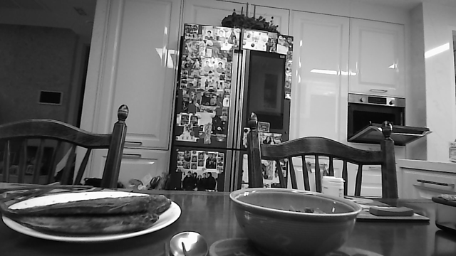

Same input. Two ways to build features.
Follow the channels, then watch where their values combine.

1280×720 grayscale → 300×300 → three identical input channels.
Below: a 4×4 teaching sample from the saved chair region, with illustrative weights. Three input channels → two output channels.
ChannelOne grid of values.
KernelA spatial grid of weights, here 3×3.
FilterAll the weights producing one output channel.
Standard convolution
Filter space and combine channels together.
Depthwise + pointwise
Filter each channel, then combine channels.
Select a filter or mixing stack to inspect its calculation. Colors follow channels; outlines select values at the current position.
Stride 1 · no padding · illustrative biases enabled · 4×4 inputs → 2×2 outputs. Each output channel has one bias, reused alongside its weights at all four positions. Different architectures and weights can produce different outputs.
Connect this teaching example to the actual MobileNet model
The real model begins with a standard 3×3 convolution: 300×300×3 → 150×150×32. Its next depthwise layer has 32 separate 3×3 kernels; pointwise uses 64 filters, each 1×1×32, producing 150×150×64. These extra channels are learned feature maps, not extra camera colors.
The actual MobileNet backbone disables convolution biases and follows its convolutions with BatchNorm/Scale and ReLU. Biases are enabled here only to teach the general convolution operation. This comparison omits those operations to isolate convolution arithmetic. Depthwise uses one kernel per input channel (depth multiplier 1). Some libraries use “kernel” to mean the whole filter tensor; this page calls its 2D slices kernels.
54 versus 33 counts stored kernel weights; adding 2 versus 5 biases gives 56 versus 38 teaching parameters. Across four output positions the weight calculations require 216 versus 132 multiply-accumulate operations, plus 8 versus 20 bias additions. Fewer operations do not guarantee the same speedup on the Pi.
02 / WHERE SSD FITS
MobileNet builds features. SSD turns features into detections.
MobileNet
Learned feature grids
conv11: 19×19×512
conv13: 10×10×1024
SSD, several scales
19×19, 10×10, 5×5,
3×3, 2×2 and 1×1 grids
Box + class predictions
Adjust default reference boxes.
Score 20 classes + background.
Suppress duplicate predictions.
Your saved result
Map boxes to source pixels;
show scores ≥ 0.5.
Reference boxes span sizes and aspect ratios; no scale is exclusively reserved for one object size. SSD’s extra layers derive smaller grids from MobileNet features. Feature-stack drawings are schematic, not captured network activations.
Source code and model details
infer_once() in detect_image.py prepares the input and calls OpenCV’s net.forward(). The graph executes MobileNet and SSD together. parse_detections() maps accepted predictions into source-image coordinates.